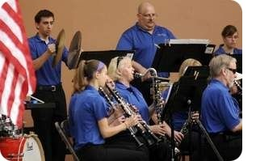

HISTORY |
The Manitowoc Marine Band was formed in the fall of 1898 by Frank Moser, a well-known local musician. Mr. Moser's band quickly developed a reputation in the county and surrounding areas. Moser was at the helm of the Marine Band for fifteen years until his death in 1913. At that time the band was reorganized and band member Emil Sohrweide was elected director and manager. Mr. Sohrweide was to become the city's "grand old man of music," serving 43 years as director of the Manitowoc Marine Band, and 52 years as a band member.
Between 1913 and the late-1920s, the fame of the Manitowoc Marine Band grew as it appeared at numerous conventions, performed at various functions, and marched in many parades. From the mid-1920s until 1934 the "Goods" was the band's sole sponsor, and during this time, the band was known as the Aluminum Goods Marine Band. Emil C. Sohrweide retired in the fall of 1953 and Bert Truttschel became the new director. Truttschel served as a popular director for 19 years until his retirement in 1973.
In 1973, the Marine Band celebrated its 75 th anniversary. This milestone in the band's history was also marked by the retirement of director Bert Truttschel and the installation of director Donald Franz. Donald Franz retired as director in 1981. He was succeeded by Richard Bjorklund. Bjorklund served as director until 1986 when Perry Suszek took over as leader of the Manitowoc Marine Band. Mr. Suszek graced the podium for the Marine Band's performance at the "Final Curtain," a benefit concert held on June 21, 1987 as the Capitol Theatre closed for renovations, reopening later that same year as the Capitol Civic Centre.
Arnold Kapitz was elected director of the band in 1990 following Suszek's departure. Mr. Kapitz had been involved with the band for 42 years, and his family had a long history of membership with the Marine Band. Arnie's grandfather, Joseph Kapitz, had been one of the original charter members and had played clarinet with the band for more than 40 years. Mr. Kapitz served as director until 1991.
The Marine Band's eighth director, Michael McClary served for one season in the summer of 1992. McClary was succeeded in 1993 by Michael Stadelman, who served until 2003. Dr. Chuck Quinn was elected director in 2003, and served until 2004. When he moved from the area Jeff Mix was elected to replace him. Mr. Mix directed the band until 2011, and current director Jeremiah Eis was elected in early 2012. In the summer of 2014, the band engaged in a recording project for only the second time in its history, and a CD was released in the fall.